Abstraction is the process of turning complex ideas into simple ones. It is removing characteristics from something so that only the essential ones remain. As programmers, we create and use abstractions all the time. Consider the following line of python code.
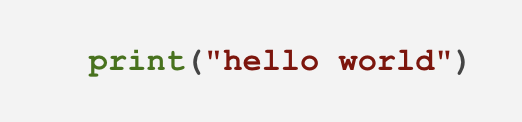Whether or not you're familiar with Python, you probably recognize this as the first program we all learn to write. You also probably understand this statement will show the words, "hello world", on a comouter display. However, relatively few programmers know the details of how this is accomplished. As it turns out, it takes over 3000 lines of C to implement this function.
The print function in Python is an abstraction. It is the simplification of something that is actually quite complex. In order to use it, all we need to know is the function name itself, or "print", and the required arguments, some literal text or a variable can be transformed into literal text.
The print function might be used withon another function we write to create yet another abstraction. That is, a different function that simplifies a higher order idea or task. This layering of abstractions is exactly how all of the software used in the world today, from text editors like Notepad to social media platforms like Facebook, is written.
Programming with classes is another way of creating abstractions in software. We begin,however, by thinking about objects. An object is a conceptual model for a category of things, real or imagined, that has a specific responsibility within our program. For example, we might think of an object that holds and provides identifying information about a person.
Objects have state and behaviour that allow them to fulfill their responsibility. The person object may have state like "given name" and "family name". It may also have related behaviors like "show western name" and "show eastern name". The following is a graphical depiction of our person object.
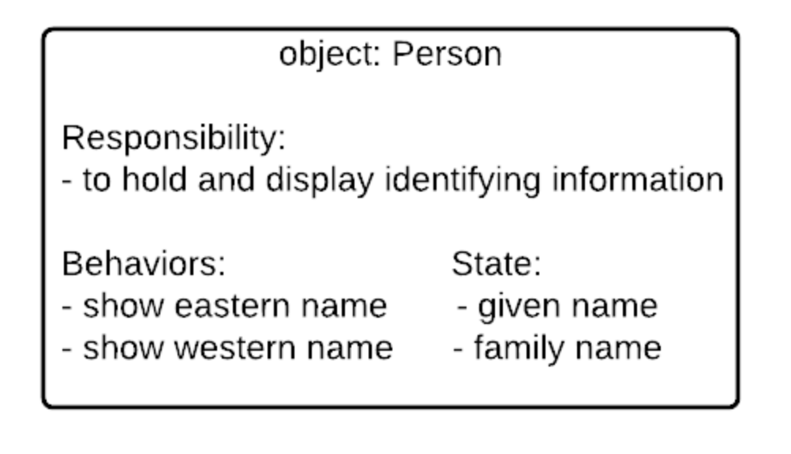Thinking about a person this way is an abstraction. It is a simplification of something that is more complex. It might seem trivial at first but not having to worry about differences in lexical name form anywhere else in our software is significant. We can just rely on the person object to take care of it.
There aren't any unrelated behaviors either. There are certainly many other ones we could think of a belonging to a person. However, our conceptualization only contains those that help fulfill its specific responibility.
With an object in mind we are ready to translate it to a code template called a class. The object's state is translated to variables called attributes. The object's behaviors are translated to functions called methods.
As a stepping stone to writing the actual code, we can create a Class Diagram which is a box that has the name of the class at the top, the member variables or attributes in the middle, and the methods at the bottom. Member variables are followed by a colon and their data type, and methods are followed by a colon and their return type. The following is an example of the Class Diagram for the Person class described above:
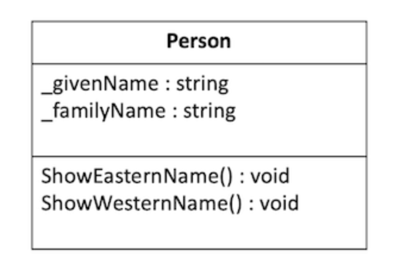You can observe from the class diagram that the standard in C# is to use TitleCase for class and method names, and to use _underscoreCamelCase for our member variable names. The underscore at that beginning helps you recognize that the variables are members of the class and are different from regular, local variables.
Once we have a class diagram, we have enough detail to begin to implement the class in code. The following is an example of the Person translated to a class in code. Be sure to read all of the comments and code carefully.
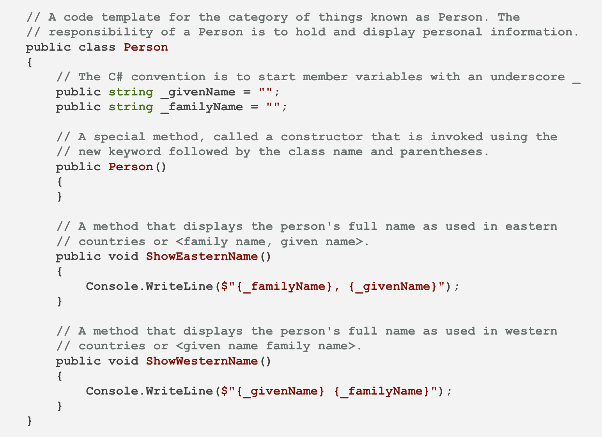There are many tools to help create class diagrams, and as you learn about more details of programming with classes you will learn that there are lots of elements that can be added to a diagram.
The important part is to focus on the name, the attributes (member variables), and the behaviors (methods). If you would like to use a tool to create the diagrams, that is great, but you can also do this as simply as creating a bulleted list in any test editor:
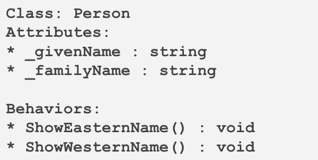By itself, a class is just a template for something. It only becomes useful when and instance is created and assigned to a variable in your program. An instance is the realization of attributes and methods in the computer's memory.
Another way to think about creating an instance of a class is to imagine baking a cake. In this metaphor, a class is like a recipe. It is a template for a cake but not the actual baked good. In contrast, an instance is what comes out of the oven. It is a realization of the recipe details in a sweet tasting crumb! Consider the following code.
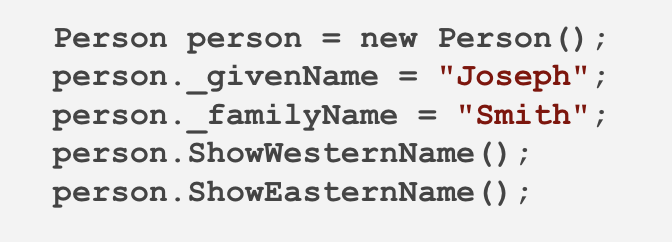Output:

In this exampe, an instance of the Person class is created and assignd to the variable called "person". It is created by invoking a special method, called the constructor, which is the name of the class followed by parentheses. Some programming languages, like Java, C# and others, require the "new" keyword when calling a constructor.
One of the most important aspects of programming with classes is that multiple instances can be created and used in the same program. The following example show the creation of two Person instances. Notice how the "given name" attributes are assigned different values, varying the behavior of the "show western name" method from one instance to the other.
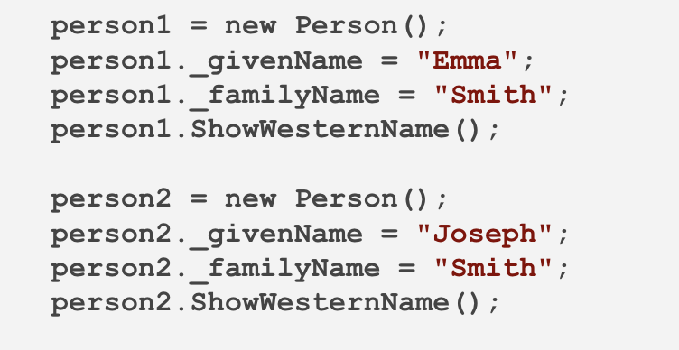Output:
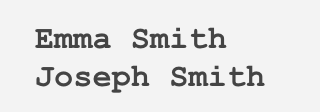When you create classes, you are really creating a new custom data type. For example, in C# there are built-in data types for integers and strings. When you declare a variable of these types, it is like making a box that can hold that type of data, and putting a label on the outside of the box with variable name. For example, consider the following code:
 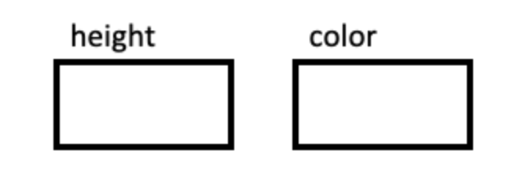
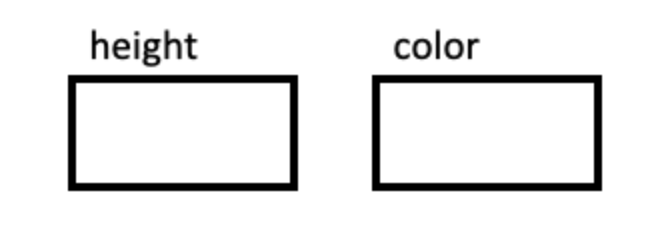
This code creates boxes that you can later fill with values. Then, when you assign the value, it puts it in the box. For example, the following code puts the number 17 in the box:
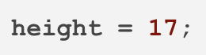 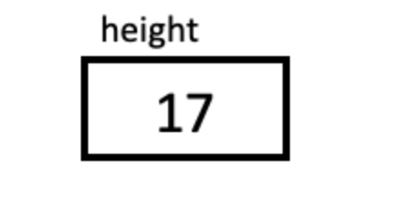And this code, changes it to 24:
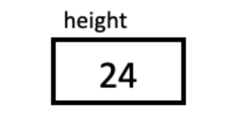Now suppose you were working for a window covering company that manufactured blinds, and you wanted a program to work with these blinds. Your code would need to store the width, height, and color of each blind in the program.
Imagine how great it would be if C# came with a data type like string or int but that was designed specifically with blinds in mind that could store all three of these components together. With classes, we can create this new datatype as follows.
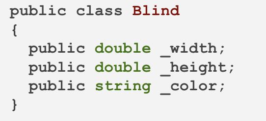With this new custom data, you can now create a new variable whose type is Blind. We can think about this as creating a new box for it The difference is that this box has a little seperator inside it making three smaller compartments, one for each of the three member variables.
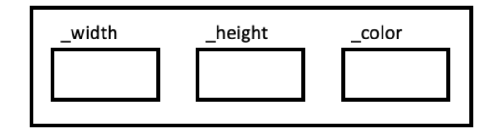Every time you create a new Blind variable, it creates another large box that has these three components. The class is what defines the structure of the large box and each of these large boxes that you create is an object or instance of that class.
For example:

In your code, whenever you use the variable kitchen it refers to a large box, and if you want to refer to anything inside the box, you use the "dot" opterator. You can set the values as follows:
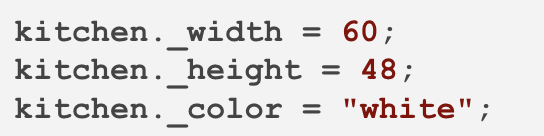 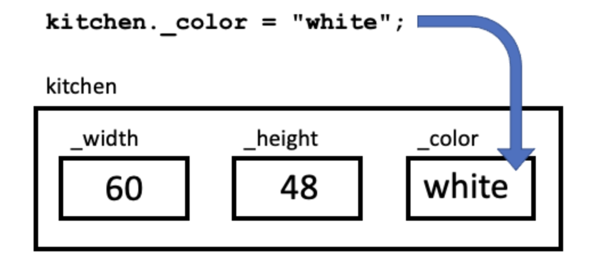And you can access the values in the same way:
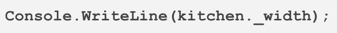 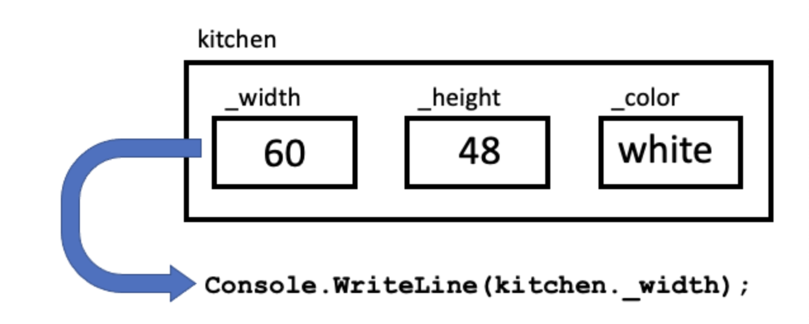Storing all of these values together in one largers box can greatly simplify your code, because, for example, you can now pass that whole large box to a function as a parameter, or return it.
In addition to storing values together, you can also put the member functions, or methods, that use that data right in the box with them.
For example, coninuting with the same window covering example, suppose that you wanted a method to compute the area of the blind, so the program could display the amount of material you needed. This could be added as a function inside the box, called, GetArea().
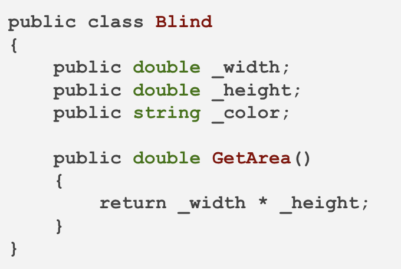The GetArea() function now belongs inside the box as well. And because it is inside the box, you use the "dot" notation to call it.
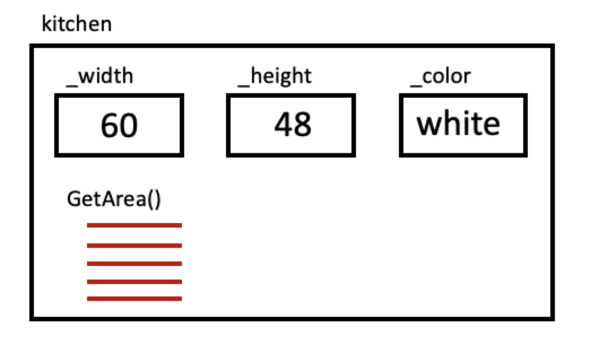The following shows all of these lines together:
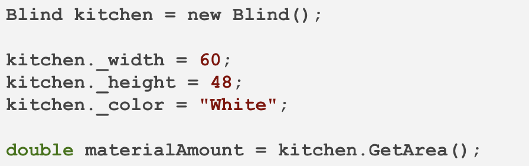Notice that to call the GetArea() method, you must supply the name of the object first. followed by a dot. Then, also notice that you do not need to pass it variables for the width and the height. This is because this method is a member of the class, so it is already "in the box", so it can access any of the member variables it needs.
The fact that the method accesses the member variables in its box, is also why GetArea() will return different values for different blind objects, such as kitch.GetArea() and livingroom.GetArea(), because these two objects will have different values for their widths and heights.
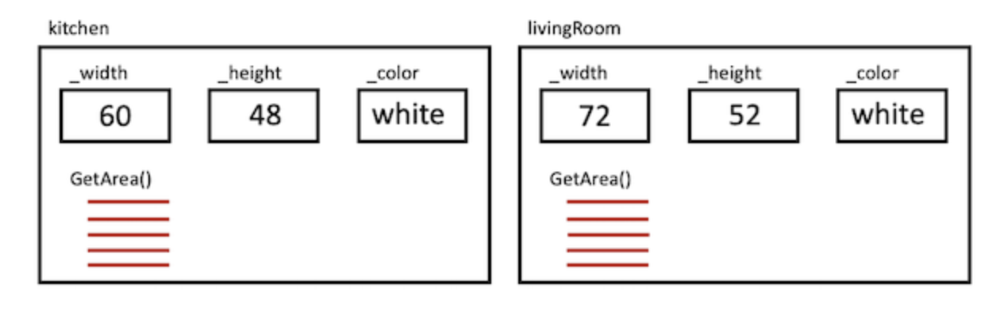In the previous example, all of the member variables had simple types (double or string). But member variables can also have custom types. This is similar to putting another box inside a larger one.
For example, in the window covering example, you might consider creating another class for the whole house. Internally, it might contain other member variables, some of which could be simple types, and others could be complex types. For example:
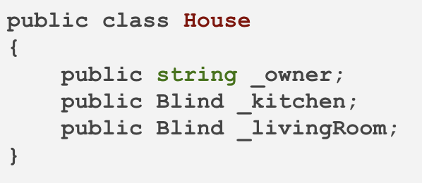Remember, that you must initialize these blinds to new values, You can do this after you create a new House object:
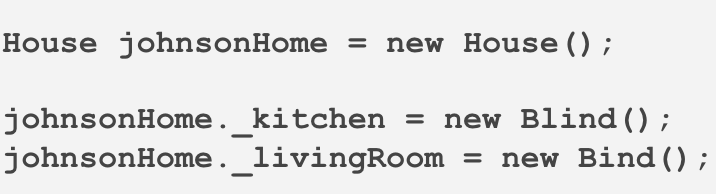Or, you can initialize these variables right in the class definition:
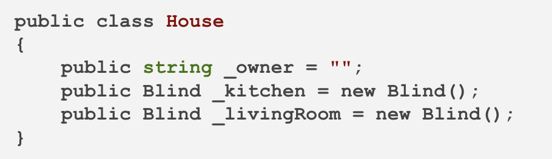Once you have created a new house object, you can access its member variables using the "dot" operator just as before:
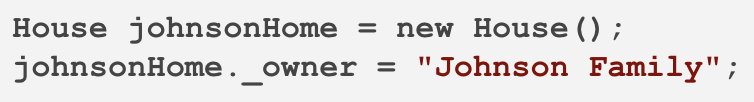When you want to access the internal values of one of these complex-type, member variables, you can just chain together multiple "dot" operations, such as:
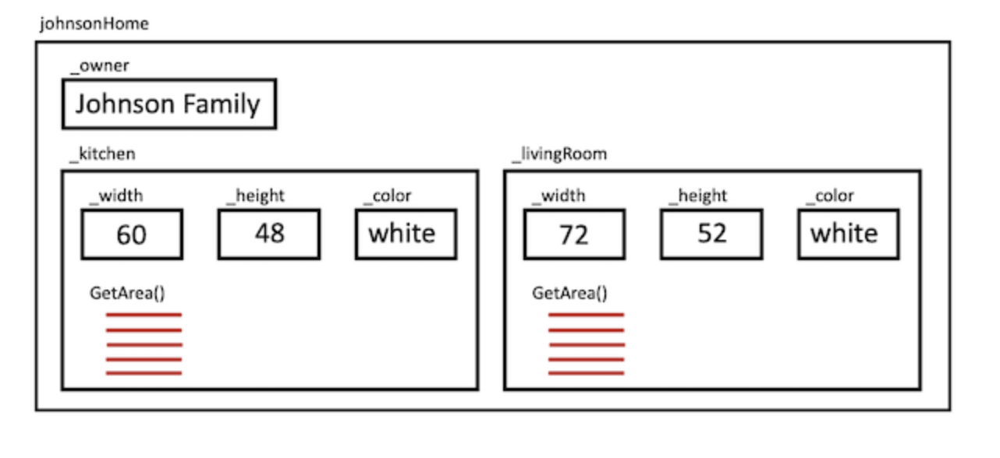the big guy crossed the road